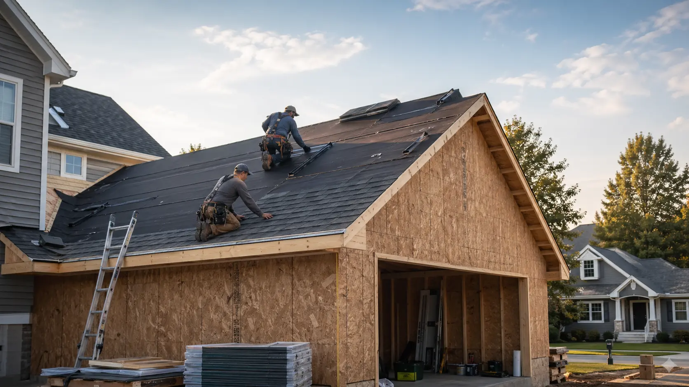

New construction roofing
For new homes, providers may discuss plan details, dry-in timing, roof slope, ventilation layout, underlayment, flashing, and the point when the structure is ready for roofing.
Connect with local roofing providers. Providers are independent, and service availability may vary by location.

Roof installation requests may involve new construction, additions, detached garages, or major remodels. This platform helps homeowners find independent local providers who can discuss roofing materials, installation scope, and project timing.
Providers are independent. Homeowners should verify license, insurance, permits, and project terms before hiring.
Roof installation can involve matching a new roof to a structure, climate, slope, ventilation needs, drainage, material preferences, and construction schedule. Independent providers may discuss asphalt shingles, metal roofing where available, flashing details, underlayment, roof slope, and weather protection planning.
Homeowners often request installation help for new homes, additions, porch tie-ins, detached garages, outbuildings, and major remodels where a roof system must be specified and installed.
Installation requests often need more coordination than repair requests because the roof system may need to align with framing, exterior trades, weather windows, and project sequencing.
For new homes, providers may discuss plan details, dry-in timing, roof slope, ventilation layout, underlayment, flashing, and the point when the structure is ready for roofing.
Addition projects may require matching new roof planes to existing materials, valleys, walls, siding transitions, drainage paths, and flashing details at connection points.
Detached garages, workshops, sheds, and accessory buildings may have simpler rooflines, but still require material selection, underlayment, ventilation, and edge detailing.
Many residential installations are steep-slope systems. Providers may discuss asphalt shingles, metal roofing where suitable, fall protection needs, and safe site access.
Some homes include porch roofs, dormers, or low-slope sections that may need different material discussions than the main pitched roof area.
Providers may discuss weather exposure, material delivery, crew access, other trades, inspection timing, and how the roof installation fits the broader project schedule.
A new roof is a system. Homeowners should compare the roof covering, moisture barriers, flashing, ventilation, fasteners, and written project terms before choosing a provider.
Installation planning often requires details about the structure, surrounding rooflines, materials, and expected timing.
Early conversations can help homeowners compare material options, timing, and installation requirements. RoofBridge Connect does not install roofs directly or supervise provider work.
Share your project type, ZIP code, timing, and any plans or measurements you already have.
Independent providers may contact you if the installation request fits their service area and availability.
A provider may review structure details, materials, slope, ventilation, and installation scope.
Compare provider credentials, written scope, price, timing, warranty terms, and insurance before hiring.
These project conditions can make early provider conversations more useful.
Independent providers may discuss material options that fit the structure, slope, local weather, budget, and availability.
No. Installation requests may involve additions, garages, outbuildings, porches, or major remodels as well as new homes.
No. RoofBridge Connect helps homeowners connect with independent local providers and does not perform or guarantee roofing installation work.
Connect with independent local providers who may discuss materials, installation scope, and project timing.